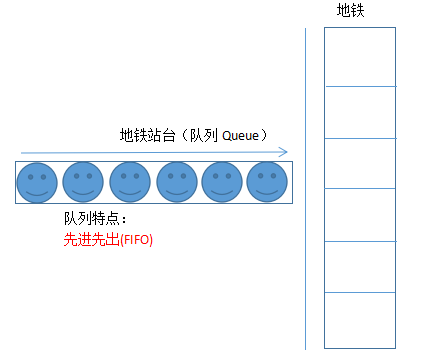

ActiveMQ 是 Apache 出品，最流行的，能力强劲的开源消息总线。ActiveMQ 是一个
完全支持 JMS1.1 和 J2EE 1.4 规范的 JMS Provider 实现，尽管 JMS 规范出台已经是很久
的事情了，但是 JMS 在当今的 J2EE 应用中间仍然扮演着特殊的地位。
大家对消息的这个词肯定不会陌生，那么在我们ActiveMQ里面指的是什么，我想你应该有必要了解下
“消息”是在两台计算机间传送的数据单位。消息可以非常简单，例如只包含文本字符串；
也可以更复杂，可能包含嵌入对象。
我觉的下面的这张图对大家而言，相比已经很清楚了（能学到MQ都很了不起啦！）

简单来说：
“消息队列”是在消息的传输过程中保存消息的容器。
举个小例子：比如你在qq上根你朋友俩天，聊天肯定是双方的，那么你发给你朋友的消息就是存储在这个腾讯的服务器中（理解为消息队列）的，当你朋友上线（登录QQ）的时候，就从服务器中收到了这条消息
是不是看起来很高大上，起始很容易了解，哈哈
5.1 ActiveMQ
ActiveMQ 是 Apache 出品，最流行的，能力强劲的开源消息总线。ActiveMQ 是一个完
全支持 JMS1.1 和 J2EE 1.4 规范的 JMS Provider 实现。（也是我们本次用的喔！）
5.2 RabbitMQ
RabbitMQ 是一个在 AMQP 基础上完成的，可复用的企业消息系统。他遵循 Mozilla Public
License 开源协议。开发语言为 Erlang。
5.3 RocketMQ
由阿里巴巴定义开发的一套消息队列应用服务。
消息队列的主要特点是异步处理，主要目的是减少请求响应时间和解耦。所以主要的使
用场景就是将比较耗时而且不需要即时（同步）返回结果的操作作为消息放入消息队列。同
时由于使用了消息队列，只要保证消息格式不变，消息的发送方和接收方并不需要彼此联系，
也不需要受对方的影响，即解耦和。
例如：用户注册
用户注册流程：
1）注册处理以及写数据库
2）发送注册成功的手机短信
3）发送注册成功的邮件信息
如果用消息中间件：则可以创建两个线程来做这些事情，直接发送消息给消息中间件，
然后让邮件服务和短信服务自己去消息中间件里面去取消息，然后取到消息后再自己做对应
的业务操作。就是这么方便
例如：订单处理
生成订单流程：
1）在购物车中点击结算
2）完成支付
3）创建订单
4）调用库存系统
订单完成后，订单系统并不去直接调用库存系统，而是发送消息到消息中间件，写入一
个订单信息。库存系统自己去消息中间件上去获取，然后做发货处理，并更新库存，这样能
够实现互联网型应用追求的快这一个属性。而库存系统读取订单后库存应用这个操作也是非
常快的，所以有消息中间件对解耦来说也是一个不错的方向。
例如：秒杀功能
秒杀流程：
1）用户点击秒杀
2）发送请求到秒杀应用
3）在请求秒杀应用之前将请求放入到消息队列
4）秒杀应用从消息队列中获取请求并处理。
比如，系统举行秒杀活动，热门商品。流量蜂拥而至 100 件商品，10 万人挤进来怎么
办？10 万秒杀的操作，放入消息队列。秒杀应用处理消息队列中的 10 万个请求中的前 100
个，其他的打回，通知失败。流量峰值控制在消息队列处，秒杀应用不会瞬间被怼死
JMS（Java Messaging Service）是 Java 平台上有关面向消息中间件的技术规范，它便于
消息系统中的 Java 应用程序进行消息交换,并且通过提供标准的产生、发送、接收消息的接
口，简化企业应用的开发，也就是Java帮我们定义的一套规范
生产者发送一条消息到 queue，只有一个消费者能收到。
例如：你给你的好友发送一条消息，那么只有他能知道你发了啥
发布者发送到 topic 的消息，只有订阅了 topic 的订阅者才会收到消息。
例如：你在教室里面大喊“我不要当码农！”，那么在教室的所有人都会听见。
*学到后面的时候，你将知道，我为什么举得这两个例子命名可以都在一个条件下成立，为什么还换到了另一个不着边际的立场点上。
准备环境：Linux
ActiveMQ 官网： http://activemq.apache.org
版本说明
ActiveMQ5.10.x 以上版本必须使用 JDK1.8 才能正常使用。
ActiveMQ5.9.x 及以下版本使用 JDK1.7 即可正常使用。根据自己的JDK版本酌情而定，初学者不必太纠结版本问题,我这里采用的是ActiveMQ5.9.0版本
tar -zxf apache-activemq-5.9.0-bin.tar.gz
ls -al apache-activemq-5.9.0/bin
如果权限不足,则无法执行,需要修改文件权限:
chmod 755 activemq
cp -r apache-activemq-5.9.0 /usr/local/activemq
/usr/local/activemq/bin/activemq start
检查进程
ps aux | grep activemq
见到下述内容即代表启动成功
使用浏览器访问 ActiveMQ 管理应用, 地址如下:
http://ip:8161/admin/
用户名: admin
密码: admin
ActiveMQ 使用的是 jetty 提供 HTTP 服务.启动稍慢,建议短暂等待再访问测试.
见到如下界面代表服务启动成功
修改 ActiveMQ 配置文件: /usr/local/activemq/conf/jetty.xml
配置文件修改完毕，保存并重新启动 ActiveMQ 服务
修改 conf/users.properties 配置文件.内容为: 用户名=密码
保存并重启 ActiveMQ 服务即可
/usr/local/activemq/bin/activemq restart/usr/local/activemq/bin/activemq stop
自行在vim里面输入ese /61616搜索下位置哈（虚拟机坏了，按时不做截图了）
配置文件中,配置的是 ActiveMQ 的核心配置信息. 是提供服务时使用的配置. 可以修改
启动的访问端口. 即 java 编程中访问 ActiveMQ 的访问端口.
默认端口为 61616.
使用协议是: tcp 协议.
修改端口后, 保存并重启 ActiveMQ 服务即可.
从它的目录来说,还是很简单的:
* bin 存放的是脚本文件
* conf 存放的是基本配置文件
* data 存放的是日志文件
* docs 存放的是说明文档
* examples 存放的是简单的实例
* lib 存放的是 activemq 所需 jar 包
* webapps 用于存放项目的目录
ps：
*如果你感到枯燥的话，那就过会再来看看吧，原理性的东西，嗯，蛮重要的